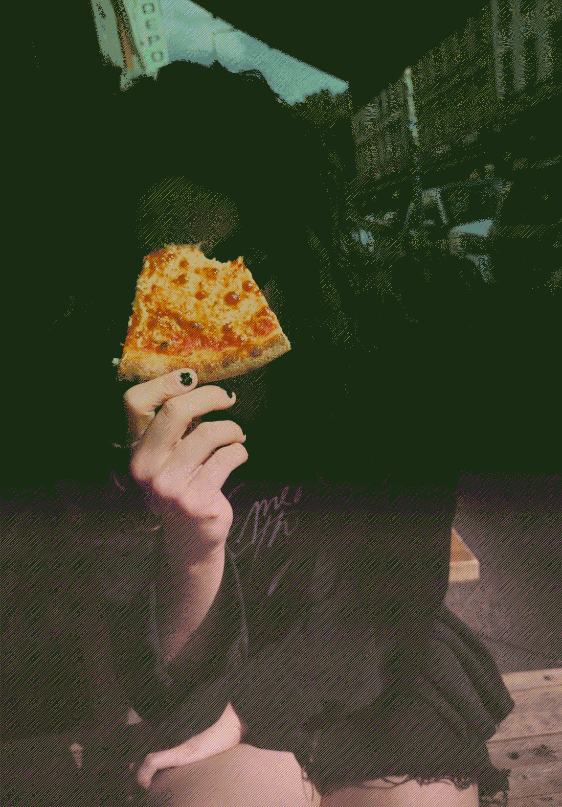

PAINTINGS
MOVIES
FEAT.
DRAWINGS
EXHIBITIONS VIEWS
UNICREAM (Portfolio)
ABOUT
CV

Charlene Levasseur
Multimedia artist
contact@charlenelevasseur.com
HTML5, CSS, Java, Json, Unity, C4D, Unity, Ai, Id, Pr, Br, Ps, Ae, Fl, Traktor, Ableton Live, Pro Tools
Human being born and raised in the South West of France, she studied the theory of contemporary art at the University of Art Michele Montaigne Bordeaux after at the institute superior of art of Toulouse, isdaT. Charlene proposes intuitives projects with differents variations betwin painting, video and sound. She likes to create atmospheric installations at the betwins of nothing. She explores post-punk universe. Mostly music lover, she proposes a visual reading of electronic music
In her last paintings she depicts scenes from digital heritage and post-technological landscapes. Composed of organic forms with black shapes, coloured sensual patterns mixed sometimes with dripping texts
Aside from Charlene’s personal work she has collaborated with Djs, producers, labels and organisations, Galleri Heike Arndt DK, Insel Galerie, Gaswerksiedlung, Armen Crew, Figure, Midnight Fantasy Entertainment, CampusFM94, radioUDON, L’Annexe, Les Siestes Electroniques, Acolora, Roven, isdaT, Ensad, Michel Montaigne Bordeaux III, FIFIB, La Forêt Electrique, Jose Cabanis Media Library, La Cartoucherie, Le Printemps de Septembre, The Night Of The Cinema Of Gouges, Festival Olympe de Gouges, le DadA, le Synopsis, Kit: Exhibition Space, Aparte, Le Cri de la Mouette and Forbiden Zone...
Charlene Levasseur
Multimedia artist
contact@charlenelevasseur.com
HTML5, CSS, Java, Json, Unity, C4D, Unity, Ai, Id, Pr, Br, Ps, Ae, Fl, Traktor, Ableton Live, Pro Tools
Human being born and raised in the South West of France, she studied the theory of contemporary art at the University of Art Michele Montaigne Bordeaux after at the institute superior of art of Toulouse, isdaT. Charlene proposes intuitives projects with differents variations betwin painting, video and sound. She likes to create atmospheric installations at the betwins of nothing. She explores post-punk universe. Mostly music lover, she proposes a visual reading of electronic music
In her last paintings she depicts scenes from digital heritage and post-technological landscapes. Composed of organic forms with black shapes, coloured sensual patterns mixed sometimes with dripping texts
Aside from Charlene’s personal work she has collaborated with Djs, producers, labels and organisations, Galleri Heike Arndt DK, Insel Galerie, Gaswerksiedlung, Armen Crew, Figure, Midnight Fantasy Entertainment, CampusFM94, radioUDON, L’Annexe, Les Siestes Electroniques, Acolora, Roven, isdaT, Ensad, Michel Montaigne Bordeaux III, FIFIB, La Forêt Electrique, Jose Cabanis Media Library, La Cartoucherie, Le Printemps de Septembre, The Night Of The Cinema Of Gouges, Festival Olympe de Gouges, le DadA, le Synopsis, Kit: Exhibition Space, Aparte, Le Cri de la Mouette and Forbiden Zone...